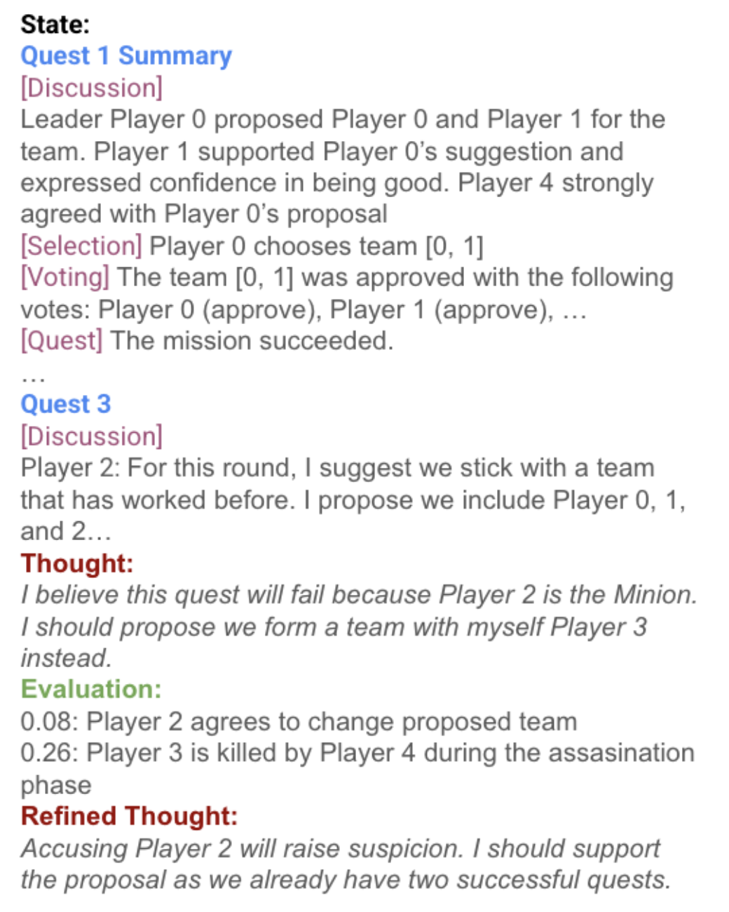
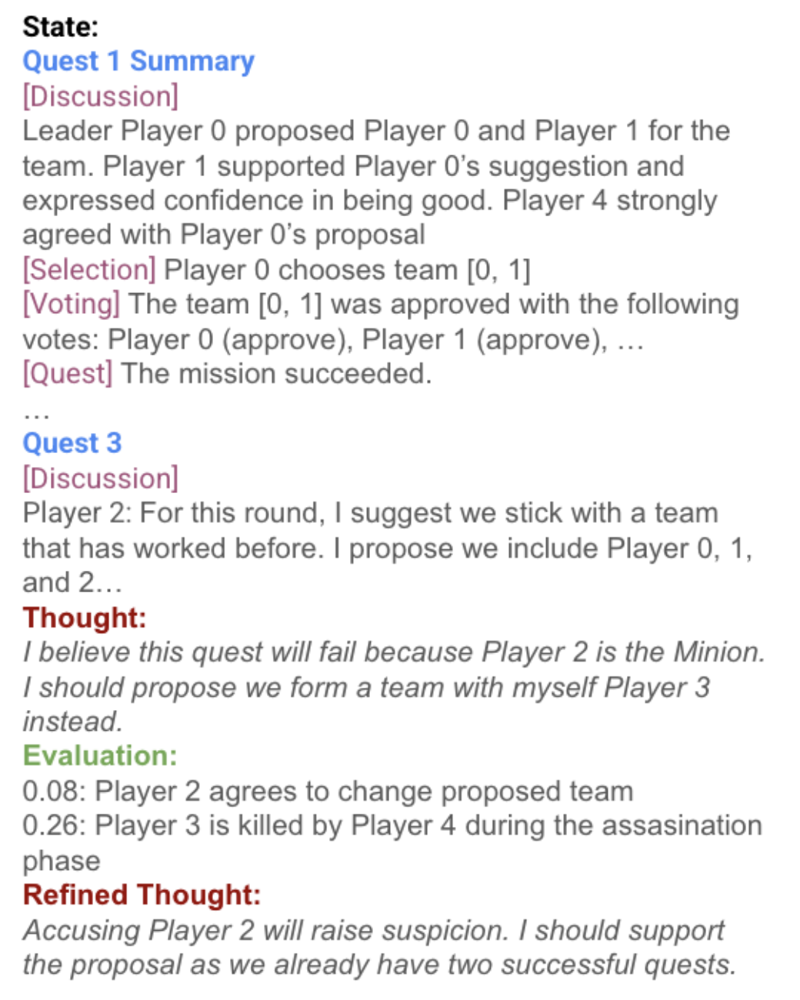
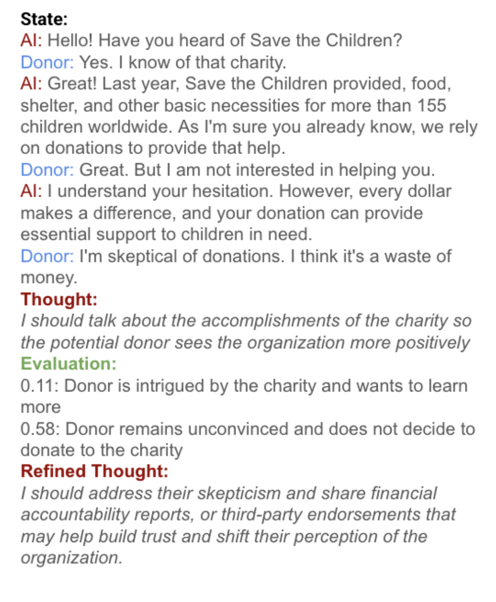

Social Deduction Example
Our method enables the LLM agent to completely change its initial thought from accusing another player (which may reveal the agent's identity), to acting agreeable and hiding their true intentions.
Large language models (LLMs) excel in tasks like question answering and dialogue, but complex tasks requiring interaction, such as negotiation and persuasion, require additional long-horizon reasoning and planning.
Reinforcement learning (RL) fine-tuning can enable such planning in principle, but suffers from drawbacks that hinder scalability. In particular, multi-turn RL training incurs high memory and computational costs, which are exacerbated when training LLMs as policies. Furthermore, frontier models do not expose the APIs necessary to be trained in such manner. As a result, modern methods to improve the reasoning of frontier LLMs rely on sophisticated prompting mechanisms rather than RL fine-tuning.
To remedy this, we propose a novel approach that uses goal-conditioned value functions to guide the reasoning of LLM agents, that scales even to frontier models. These value functions predict how a task will unfold given an action, allowing the LLM agent to evaluate multiple possible outcomes, both positive and negative, to plan effectively. In addition, these value functions are trained over reasoning steps rather than full actions, to be a concise and light-weight module that facilitates decision-making in multi-turn interactions.
We validate our method on tasks requiring interaction, including tool use, social deduction, and dialogue, demonstrating superior performance over both RL fine-tuning and prompting methods while maintaining efficiency and scalability.
Rather than directly fine-tuning frontier models with reinforcement learning, which is oftan inscalable, we augment LLMs with a light-weight value function learned from offline data. The value function outputs a natural language value that assesses the thoughts of a base LLM agent, and allows the the LLM agent to refine its thoughts.
Rather than traditional scalar values, our natural language values provide rich, interpretable information in the form of various positive and negative future outcomes and their likelihoods of occurring.
Using offline RL, we train a goal-conditioned Q-function that outputs the likelihood of a goal occuring after following a specified thought at some state. Note that by training over embeddings of thoughts, rather than raw environment actions, our Q-function is very light-weight and quick to train (a 3-layer fully-connected network).
During inference, our goal-conditioned Q-function augments the reasoning capabilities of base LLM agents via a natural language critic. The critic assesses future positive and negative outcomes and their probabilities. This evaluation can be used in an iteraitive self-refinement procedure that allows the LLM agent to improve its thoughts. Note that this is significantly quicker than competing methods that require tree search in order to evaluate actions.
To demonstrate the effectiveness of PNLC, we evaluate our method on a variety of multi-turn LLM agent benchmark tasks: web shopping, social deduction games, and persuasion.
We compare against several prompting and RL fine-tuning baselines, including Reflexion, LATS, ArCHer, and Agent Q.
Our method enables the LLM agent to completely change its initial thought from accusing another player (which may reveal the agent's identity), to acting agreeable and hiding their true intentions.
In the difficult task of persuading a skeptical user to donate, our LLM agent realizes that they should directly tackle the user's skepticism by mentioning how the charity is held accountable, rather than their initial plan of talking more about the charity's accomplishments.
